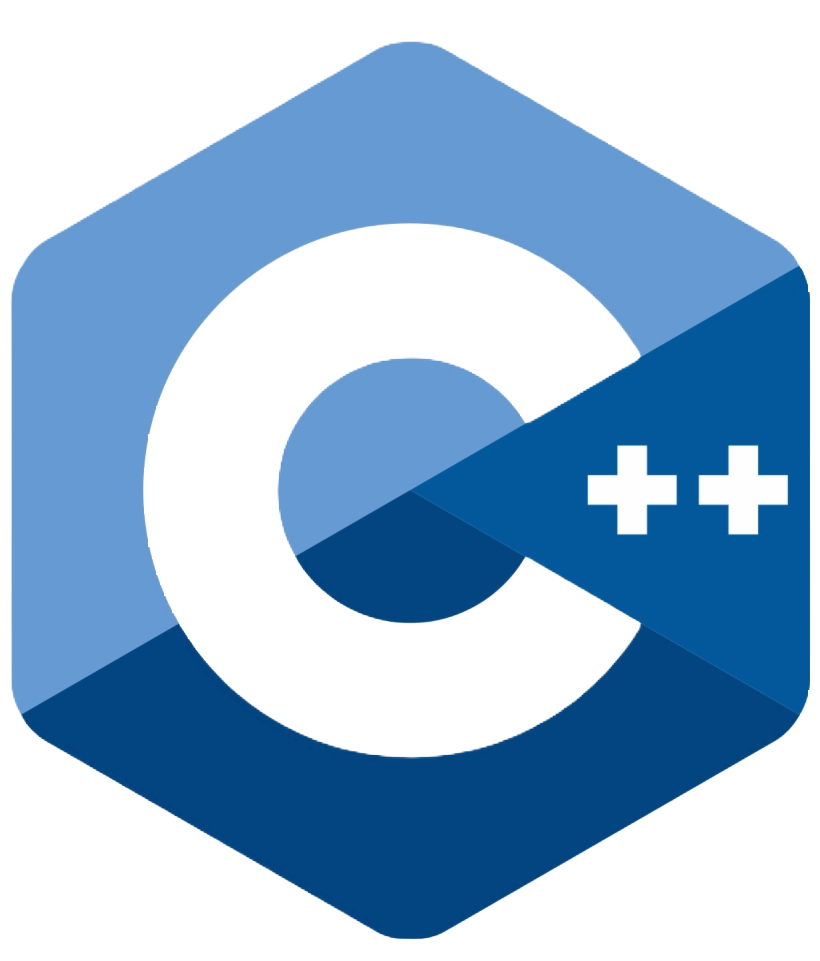
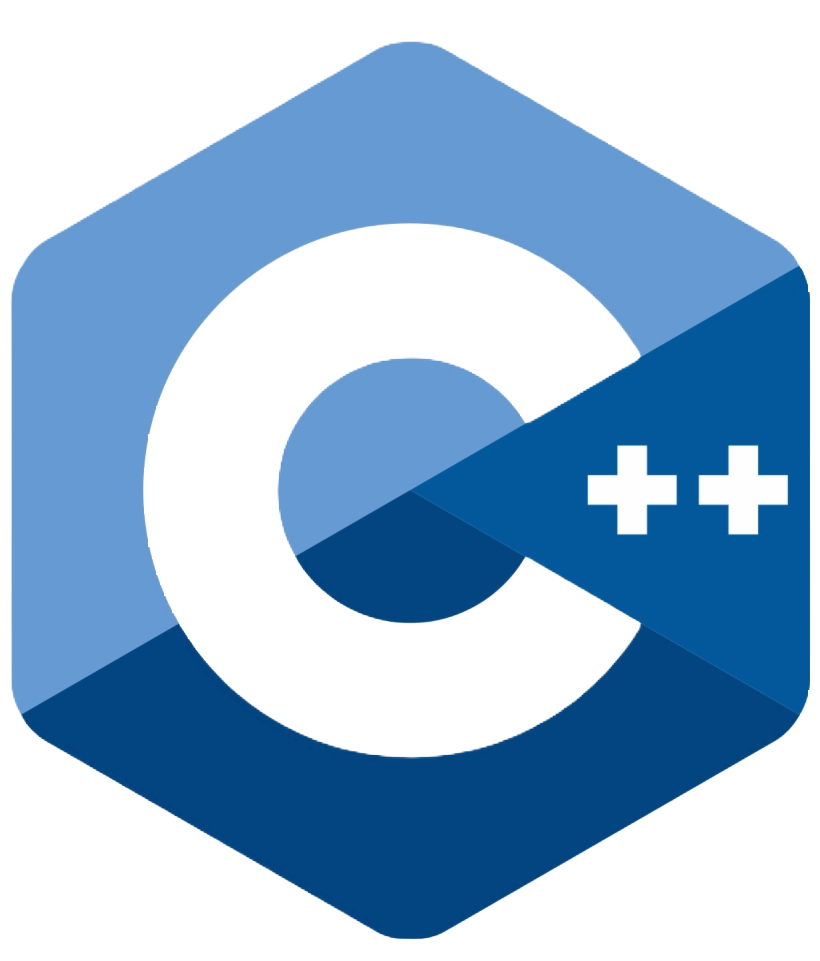
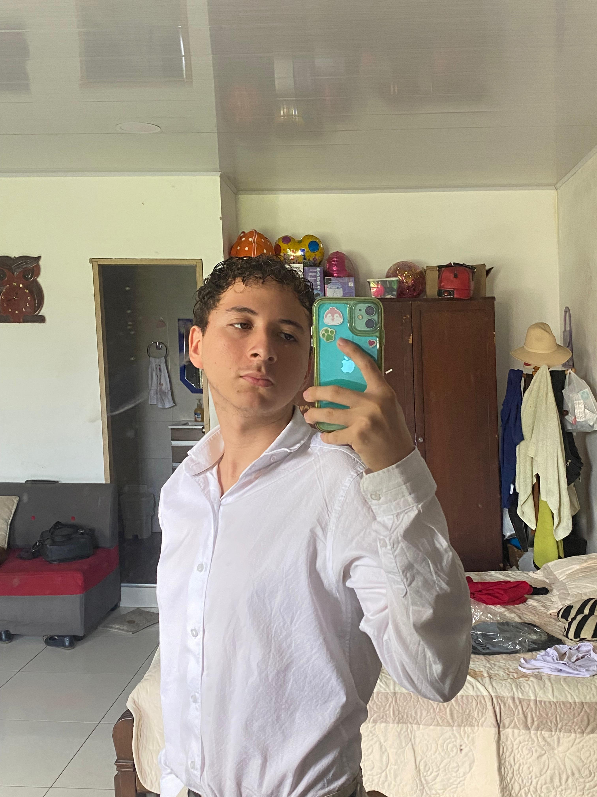
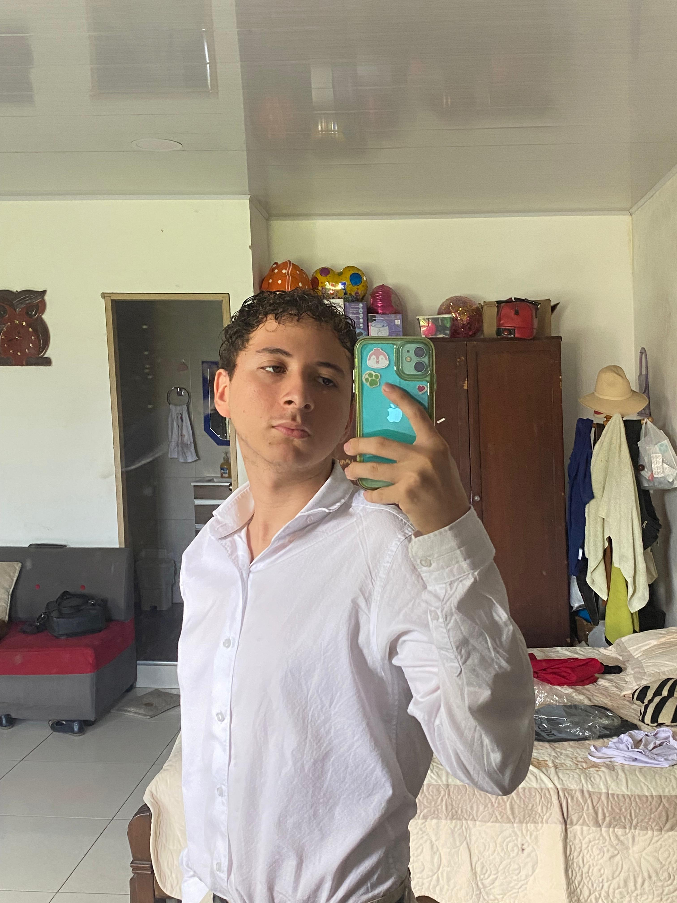

Información Personal
Soy Jader, estudiante de Ingeniería de Sistemas en quinto semestre con una gran pasión por el desarrollo web. He trabajado en diversos proyectos, como la creación de una plataforma de e-commerce utilizando React y Node.js, y el desarrollo de una aplicación móvil híbrida con Flutter. Mis habilidades incluyen HTML, CSS, JavaScript, React, Node.js, MongoDB y bases de datos relacionales. Estoy constantemente buscando nuevos desafíos y oportunidades para aprender y crecer. Mi objetivo es convertirme en un desarrollador full stack completo y contribuir al desarrollo de soluciones innovadoras.
 
